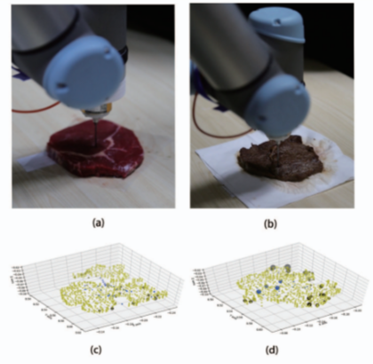
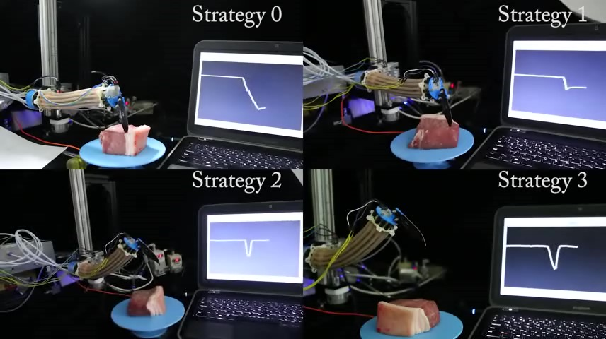
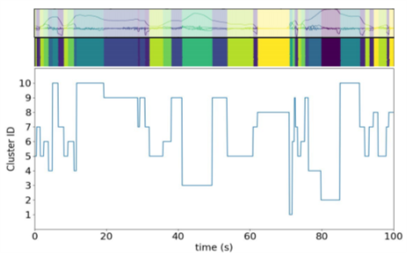
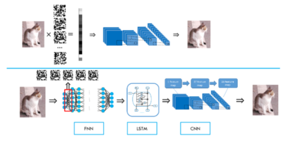
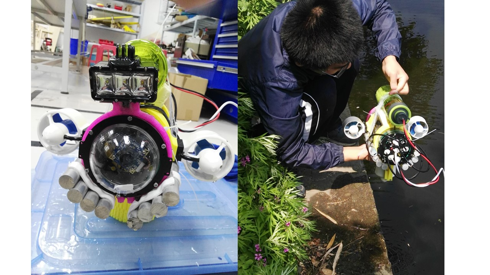
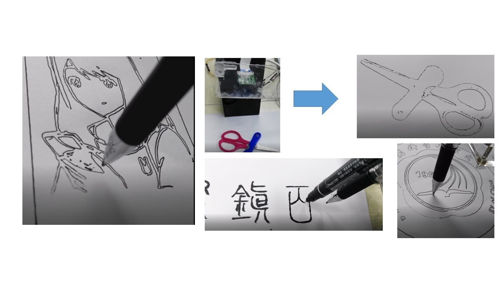
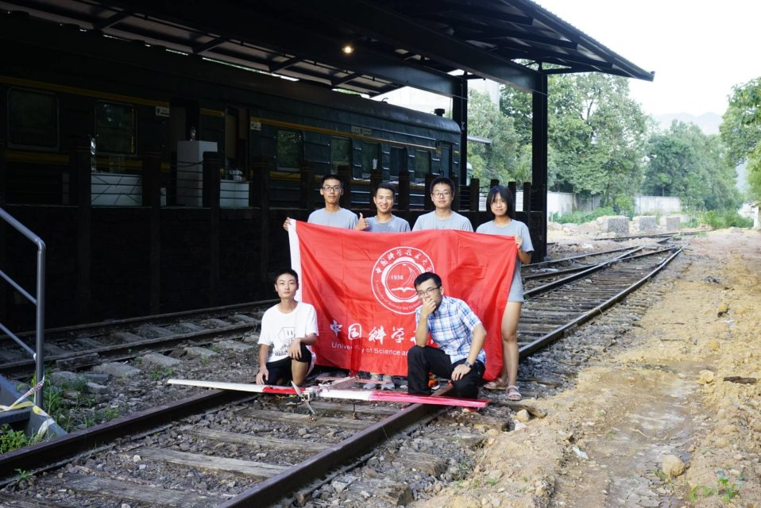
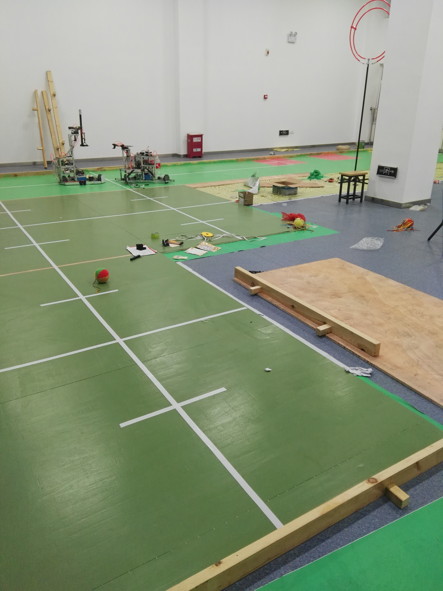
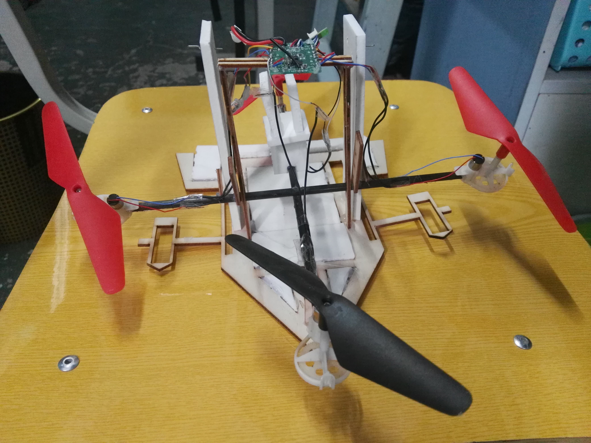

About Me
I'm an undergraduate from USTC. My current research investigates:
1. How to utilize hands-free gestures to enable text entry;
2. Introducing new input(sensing) and output(haptic/thermal feedback) techniques to enable novel interactions on smart wearables;
3. Sensing for human activity recognition and sensing in the environment.
CV is available upon request.
Skill Sets
Proficient in: Python, C, Matlab, Arduino, LaTeX
Also basic ability with: processing, VHDL.
SolidWorks, AutoCAD, RDworks, Matlab, Photoshop
Fast prototyping, Coding, Mechanical design, Electronic design, Machine learning algorithm development, Paper writing
Good hands-on skills, Works well in a team, Works hard, Presentation skills
Contact Me
songlinxu6@outlook.com
News
2020.10.9: One long paper is submitted to IUI 2021.
2020.8.6: Hydrauio is accepted by UIST 2020 Poster!
2020.7.1: Graduate from USTC. Goodbye, USTC!
2020.6.11: FingerTrak is accepted by IMWUT 2020!
2019.7-2020.2: Internship and conducting my graduation thesis research at Cornell University(Advisor: Prof. Cheng Zhang)
2019.8: One paper got accepted by WRC SARA 2019 and won the best paper finalist award!
2019.6: Excellent Project Award in Student Innovation Program of USTC
2019.5: The third-class prize of Student Innovation Program at Chinese Academy of Sciences
2019.1-2019.3: Internship at Cornell University(Advisor: Prof. Cheng Zhang)
2019.1: One paper got accepted by IEEE Robotics and Automation Letter!
2018.8-2018.9: Internship at Carnegie Mellon University(Advisor: Prof. Ding Zhao)
2018.7-2018.8: Internship at University of Michigan -- Ann arbor(Advisor: Prof. Ding Zhao)
2018.6: The second-class prize in Robocon of China
2018.1-2018.3: Internship at Dartmouth College(Advisor: Prof. Xing-Dong Yang)
2017.10: Joined the Robotics Lab at USTC under the supervision of Prof. Xiaoping Chen
2017.10: The third-class prize in the divisional competition of China Aeromodelling Design Challenge
2017.9: The second place of 2017RoboGame at USTC
Current Research
Text Entry using Hands-free Body Gestures.
Hands-free input is useful, especially when users' hands are busy with other tasks. My current research investigates developing novel hands-free interaction techniques to enable text entry as well as other input scenarios.
Novel Interactions on Smart Wearables.
Smart wearables are popular today. Whereas existing technologies could not provide natural enough interaction experience to users. My research aims to pave the way for a more smooth, natural and convenient interaction experience through the development of novel input(sensing) and output(haptics) techniques.
Sensing for Human Activity Recognition and Sensing in the Environment.
Human activity recognition(e.g. body gestures) is useful to assist input and enhance user experience. Aside from sensing for humans, sensing in the environment offers a wider way to support a more natural interaction experience.
Publications: Human Computer Interaction and Ubiquitous Computing
FingerTrak: Continuous 3D Hand Pose Tracking by Deep Learning Hand Silhouettes Captured by Miniature Thermal Cameras on Wrist
In this paper, we present FingerTrak, a minimal-obtrusive wristband that enables continuous 3D finger tracking and hand pose estimation with four miniature thermal cameras mounted closely on a form-fitting wristband. FingerTrak explores the feasibility of continuously reconstructing the entire hand postures (20 finger joints positions) without the needs of seeing all fingers.
Hydrauio: Extending Interaction Space on the Pen through Hydraulic Sensing and Haptic Output
We have explored a fluid-based interface(Hydrauio) on the pen body to extend interaction space of human-pen interaction. Users could perform finger gestures on the pen for input and also receive haptic feedback of different profiles from the fluid surface. The user studies showed that Hydrauio could achieve an accuracy of more than 92% for finger gesture recognition and users could distinguish different haptic profiles with an accuracy of more than 95%. Finally, we present application scenarios to demonstrate the potential of Hydrauio to extend interaction space of human-pen interaction.
SpringErr: A Haptic Feedback System for Breadboards Using Virtual Springs
This paper introduces a novel haptic feedback method on breadboards. When inserting a component, a user feels a virtual spring underneath pins, whose stiffness varies to inform the user about different types of electronics errors (e.g. bad connections). We demonstrate the potential of this new haptic output through SpringErr, a haptic prototype. We used our prototype to examine the recognizability of six distinct virtual spring profiles, including High Stiffness, Medium Stiffness, Low Stiffness, Bump, Pierce, and Disappear.
Publications: Robotics
Exploring Hardness and Geometry Information through Active Perception
{kind=link}
In this paper, a framework combining active perception and motion planning algorithm is proposed to get both hardness and geometry information of an object which also ensures working efficiency. In this framework, a stylus mounted on a robotic arm explores hardness and geometry information on the surface of the object actively and a depth camera is used to capture raw 3D shape information. A novel motion planning algorithm is proposed to keep the exploration operative and time-saving. Experimental results show that our framework has good performance and can explore global hardness and geometry information efficiently.
IMU-Based Active Safe Control of a Variable Stiffness Soft Actuator
In this paper, a novel soft actuator is presented, whose stiffness is tunable in multiple ways, and more than a 10-fold stiffness enhancement is achievable, making it able to carry heavy loads while maintaining excellent dexterity and compliance. Meanwhile, we first proposed an active safe control strategy based on inertial measurement units (IMUs).
Estimating Risk Levels of Driving Scenarios through Analysis of Driving Styles for Autonomous Vehicles
In order to operate safely on the road, autonomous vehicles need not only to be able to identify objects in front of them, but also to be able to estimate the risk level of the object in front of the vehicle automatically. It is obvious that different objects have different levels of danger to autonomous vehicles. An evaluation system is needed to automatically determine the danger level of the object in front of the autonomous vehicle. It would be too subjective and incomplete if the system were completely defined by humans.
Single Pixel Imaging System Using Deep Learning Algorithms for Image Reconstruction
A novel time series inspired end-to-end neural network combining convolutional neural nerwork and long short-term memory neural network(E2E-LSTM-CNN) is proposed to reduce the recovery time with less sampling. Our E2E-LSTM-CNN can recover 128×128 pixel image within the recovery time of less than 0.5 second from a single-pixel camera sampling at a compression ratio of less than 0.1%. The experiment shows that our method needs less recovery time than the state-of-art methods but can achieve similar PSNR and SSIM metric value under less sampling than other methods
Fun Projects
Remote Control Underwater Vehicle
We designed a remoted control underwater vehicle based on Ardusub system. A camera is mounted on the ROV to capture videos underwater and a contact microphone is attached on the body of the ROV to capture sound print signals while the ROV is operating in the water.
Drawing Robot in the Robotics Competition
Participating in 2017RoboGame which is a robot competition at USTC and making a robot which can draw almost everything if you input its black-and-white photograph and can recognize the characters in the photo and write it in another typeface called Xiaozhuan, an ancient style of calligraphy.
China Aeromodelling Design Challenge
Taking part in the China Aeromodelling Design Challenge and designing and making a kind of model airplane which is lighter than 1 kg but can hold more than 1 kg of water and then throw the bag containing water into the right area accurately.
Robocon
Participating in Robocon of China in 2018 and I am in the computer vision group of USTC. Our job is to identify whether the shuttlecock has entered the ring in a complex environment. And we get the second-class prize on behalf of USTC.
- Robocon in China
- 2018
Making a Novel UAV
Making a new kind of UAV based on the four-rotor aircraft which can sail on the water by changing the degree of rotation of a shaft which is connected with two motors.
- Video
- 2017